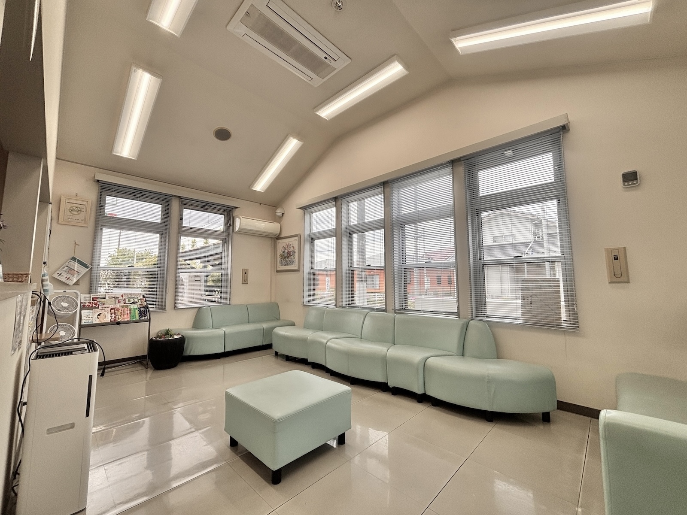
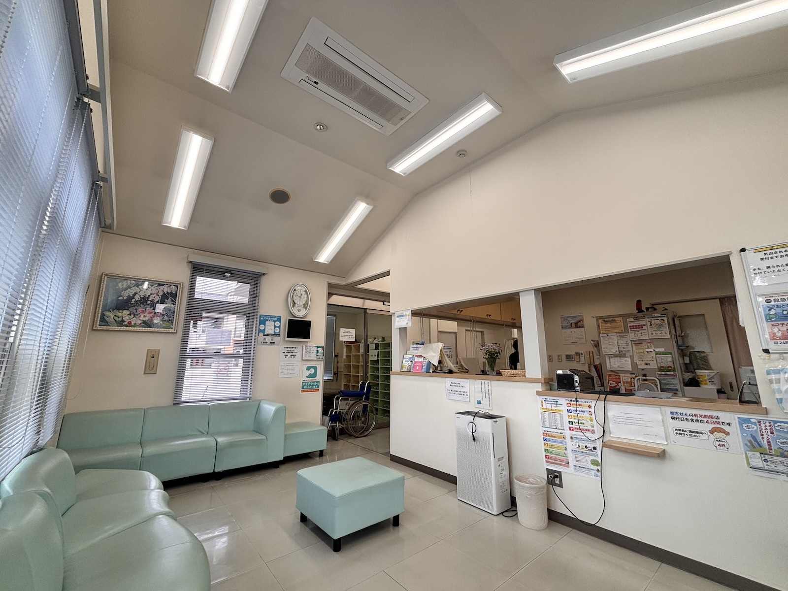
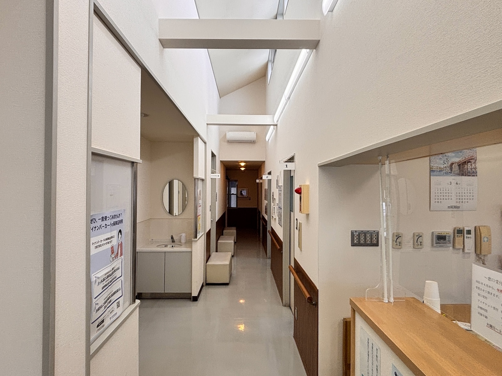
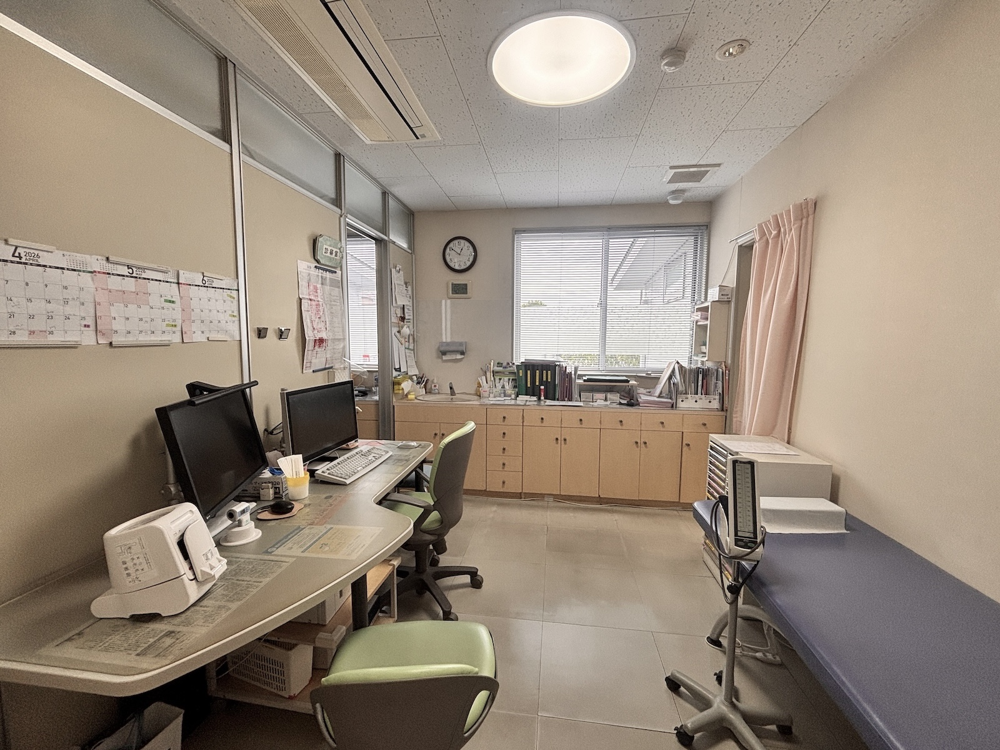

からだの不調を、
気軽に相談できる場所に。
地域のかかりつけ医として、風邪や生活習慣病など、日常の健康に関するご相談をうかがいます。
お知らせ
-
インフルエンザ予防接種受付について
2026年度は中学生以上の方のご案内のみになります、ご了承ください。 予防接種ご案内期間は10月1日(木)から12月12日(土)です。 定期診察の方は、受診時に受付窓口でお声がけください。 予防接種だけのご予約の方は、9月24日からインターネットでの予約開始となります。 携帯やPCから下記を直接入力しアクセスして下さい。 https://www.shujii.com/0297253111/i/
-
新型コロナウイルス感染症予防接種のお知らせ
2026年10月1日から接種開始になります。 予約は不要です。ご希望のお日にちの診療時間内に来院してください。 インフルエンザと同時接種はご案内していません。 予防接種価格は15500円です。 65歳以上の方は指定の予診票をお持ちください。
診療案内
診療の対象年齢は、小学生以上の方です。
内科全般
風邪、発熱、生活習慣病など、日常の健康に関するご相談をうかがいます。
消化器内科
胃や腸などの不調を診察します。上部内視鏡検査(胃カメラ)も実施しています。
循環器内科
月曜日は終日、非常勤の循環器科の医師が診察します。
こんな症状はご相談ください
- 発熱・風邪・咳
- 腹痛・胃もたれ
- 胸やけ・吐き気
- 動悸・息切れ
- 高血圧・糖尿病
- 脂質異常症(コレステロール)
- 頭痛・めまい
- 健康診断・予防接種
診療時間
| 診療時間 | 月 | 火 | 水 | 木 | 金 | 土 | 日・祝 |
|---|---|---|---|---|---|---|---|
| 9:00 – 12:00 | ● | ● | ● | ● | ● | ▲ | × |
| 14:30 – 18:00 | ■ | ● | × | × | ● | × | × |
休診日:水曜午後・木曜午後・土曜午後・日曜・祝日
■月曜日代診
午後診療時間が13：30～16：30になります。午前は変更ありません
▲土曜日の午前診療は8:00〜12:00です。
受付時間
| 受付方法 | 午前 | 午後(月曜をのぞく) |
|---|---|---|
| 窓口 | 8:00〜12:00 | 14:00〜17:45 |
| オンライン | 8:30〜11:00 | 14:15〜17:00 |
※月曜日の午後のみ、窓口受付は13:30〜16:30、オンラインは13:45〜16:00です。
院内の様子




初めての方へ
当院は日時を決める予約制ではありません。診察時間内に直接ご来院ください。来院前に、当日受付もできます。
-
受付
マイナンバーカードか資格確認書をご用意いただき、受付で「初診」とお伝えください。他院からの紹介状(診療情報提供書)をお持ちの方は、あわせて受付へお出しください。
-
問診
受付でマイナンバーカード・資格確認書をお預かりし、問診票の記入などを行います。
-
順番の確認
受付が終わりましたら、「アイチケット」でご自身の待ち順をリアルタイムで確認できます。診察までお時間がかかる場合は、外出していただくこともできます。
- 診察の状況により、番号が早く進むことがあります。
- こまめに番号をご確認のうえ、ご自分の順番までにご来院ください。
- 番号をお呼びした際にご不在の場合は、診察状況によっては、ご来院いただいても長くお待たせすることがあります。ご理解とご協力をお願いいたします。
- 「すぐいく」をご利用の方は、必ず番号を確認し、順番に遅れないようにお越しください。
- 窓口で診察券を出す際に、「アイチケットで申し込んでいます」とお伝えください。
-
診察・お会計
診察後、受付でお会計をします。お薬が処方される場合は、処方箋をお渡しし、薬局での受け取り方法をご案内します。次回お越しいただく時期の目安も、あわせてお伝えします。
お支払いは現金のみです。クレジットカード・電子マネー・QRコード決済などのオンライン決済はご利用いただけません。
医師紹介
院長
舩山 夏子
専門:消化器内科
- 内科認定医
- 消化器内科専門医
経歴
- 島根県出身
- 1988年 筑波大学医学専門学群 卒業
- 筑波大学附属病院・筑波メディカルセンター病院・総合守谷第一病院などで勤務
- 2003年 ふなやま内科クリニック 開業
非常勤医師(月曜日)
森下 ふう菜
専門:循環器内科
非常勤医師
舩山 遼太郎
専門:循環器内科
- 内科専門医
アクセス
- 住所
- 〒300-2436 茨城県つくばみらい市絹の台2-10-1
- 電話
- 0297-25-3111
- 交通
- 関東鉄道常総線 小絹駅 徒歩5分
- 駐車場
- あり(11台)
- 支払い
- 現金のみ(クレジットカード・電子マネー・QRコード決済はご利用いただけません)